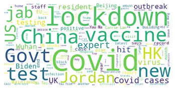
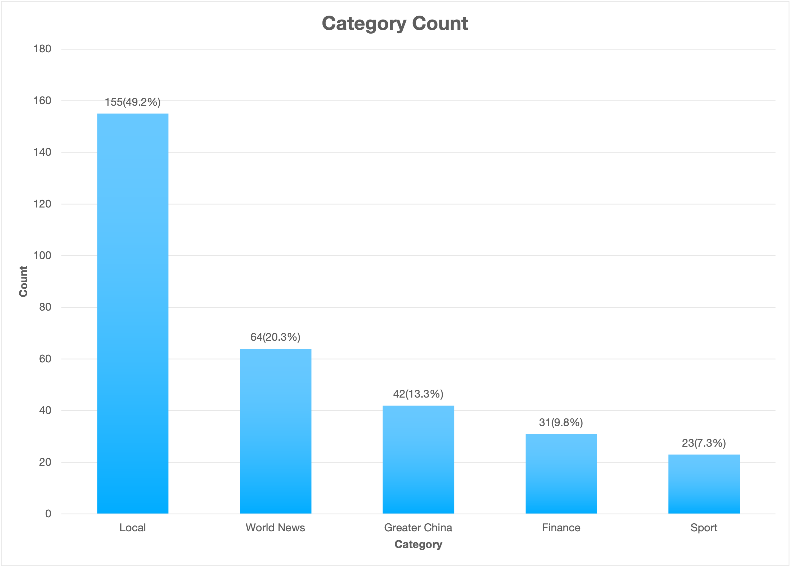
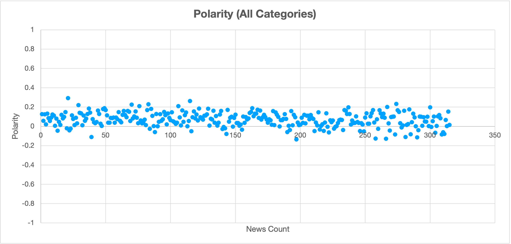
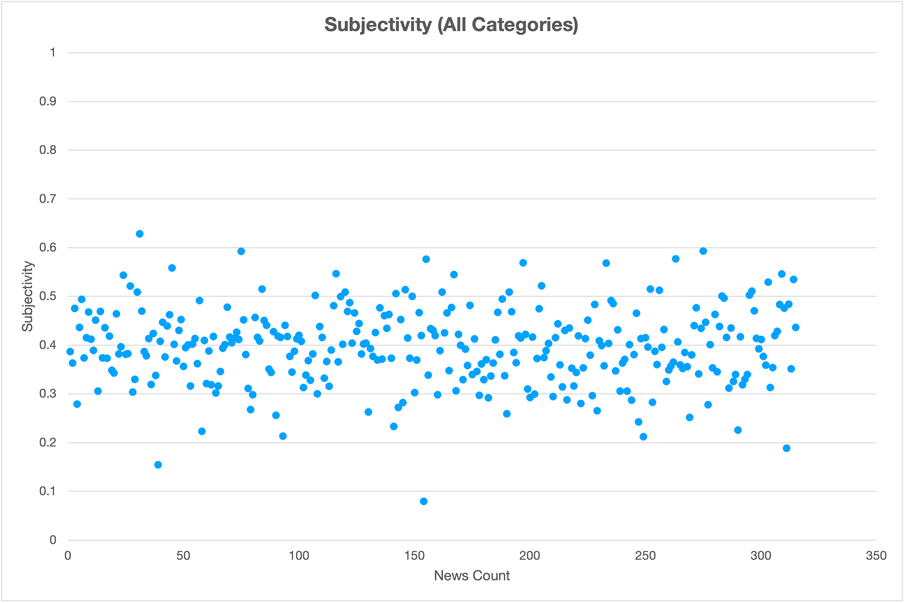
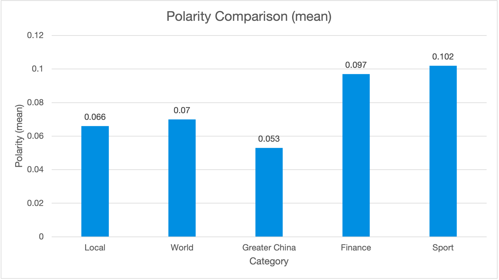
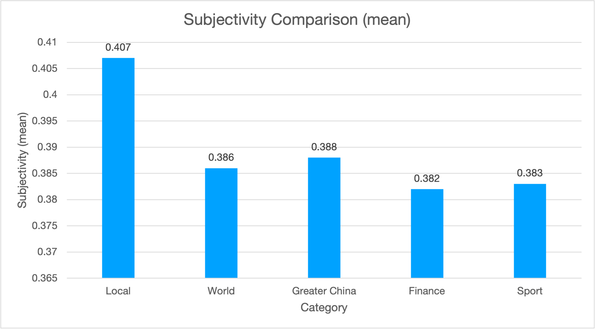

What did the news said?
Wordcloud of news dataset(titles), could represent each term's importance and frequency, the bigger words means greater weight.
The following will explain several essential wordings in the dataset.
Categories distribution
There are total 5 categories in RTHK's news classification.
In the extracted dataset of total 315 news, the distribution is in the following:
For more information in each category, please access through the tabs on page top.
Sentiments
Polarity
Polarity of the news, represents the emotional sentiment of the data, ranging from -1 to 1 (most negative to most positive.)
The figure shows that the range of the polarity is from -0.135 to 0.292, which is a relatively narrow range. The mean and median are similar so there are no extreme polarity. This showed most of the news were delivering informative content, but not strong personal emotion.
The upper figure showed the distribution of polarity, below are some details (corrected to 3 decimal places).
| Mean | 0.0707 |
|---|---|
| Minimum | -0.135 |
| Lower Quartile(25%) | 0.022 |
| Median(50%) | 0.074 |
| Upper Quartile(75%) | 0.121 |
| Maximum | 0.292 |
For more information in each category, please access through the tabs on page top.
Subjectivity
Subjectivity of the news can determine whether it is objective or not, ranging from 0 to 1 (most objective to most subjective).
The mean and median are similar, showed there are no extreme subjectiveness of the news. The maximum value is 0.628, showed there are no extreme subjective news that expressing personal opinion.
The upper figure showed the distribution of subjectivity, below are some details (corrected to 3 decimal places).
| Mean | 0.396 |
|---|---|
| Minimum | 0.080 |
| Lower Quartile(25%) | 0.347 |
| Median(50%) | 0.401 |
| Upper Quartile(75%) | 0.440 |
| Maximum | 0.628 |
For more information in each category, please access through the tabs on page top.
Comparison
Polarity
Comparison of polarity mean of each category.
The Sport news category carried highest polarity, and Greater China news carried the lowest. The result was caused by the news contents among these categories. For example, for Sport news, there were some positive news of reopening some sports contests and facilities, so it carried higher polarity. For Greater China news, since most of the news were about the incresed number of confirmed cases, so it carried lower polarity.
Subjectivity
Comparison of subjectivity mean of each category.
The Local news category carried highest subjectivity, and Finance news carried the lowest. The reason of higher subjectivity in Local news was because the news contents may included some personal opinion of government officers during their press conference. The Finance news contents were basically describing the stock market trend and countries' financial situation, so that it carried lower subjectivity.